My Universities
Two institutions â one in the hills of Chittagong, one on the plains of North Dakota â that have shaped my academic journey.
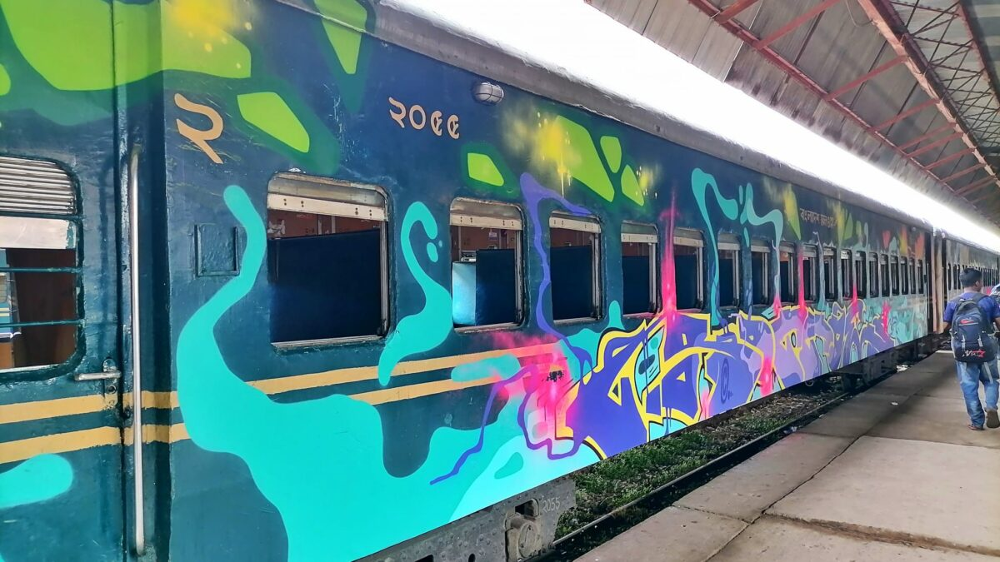
© cu.ac.bd
One of Bangladesh's largest universities, the University of Chittagong sprawls across a forested 2,312-acre campus served by its own scenic shuttle train â one of the most distinctive features of student life there.
I completed my BSS (Honours) in Economics here, in a department that opened on the very day the university was inaugurated in 1966. Over its history, the department has produced some of Bangladesh's most eminent economists and policymakers.
Its most celebrated alumnus is Dr. Muhammad Yunus â Nobel Peace Prize Laureate (2006) â who joined as an assistant professor in 1972 and later founded Grameen Bank, which transformed the lives of millions through microcredit.
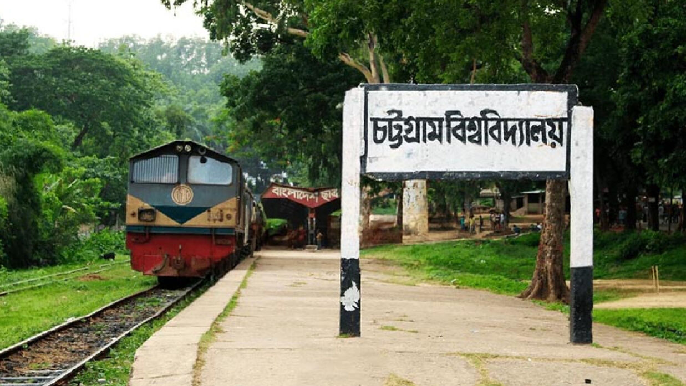
© cu.ac.bd
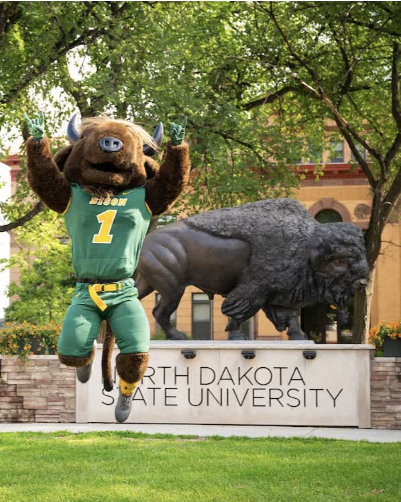
NDSU is a public land-grant research university in Fargo, North Dakota, originally founded in 1890 as North Dakota Agricultural College. It is classified as an R1 Doctoral University, recognising very high research activity.
I am currently enrolled as an MS student and Graduate Research Assistant in the Department of Agribusiness and Applied Economics, where I work under Dr. Jon T. Biermacher on topics including nitrogen application under risk and economic feasibility of livestock management practices.
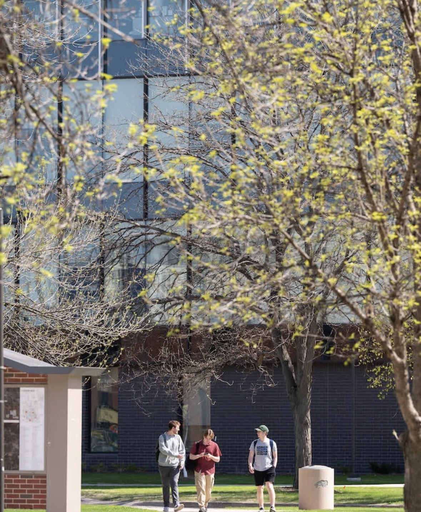
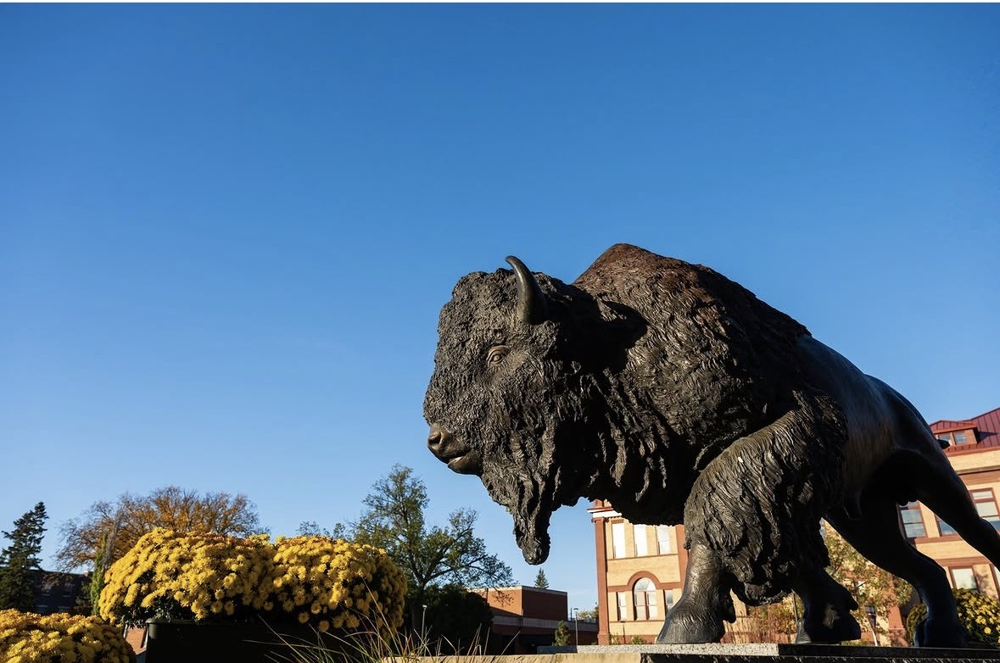
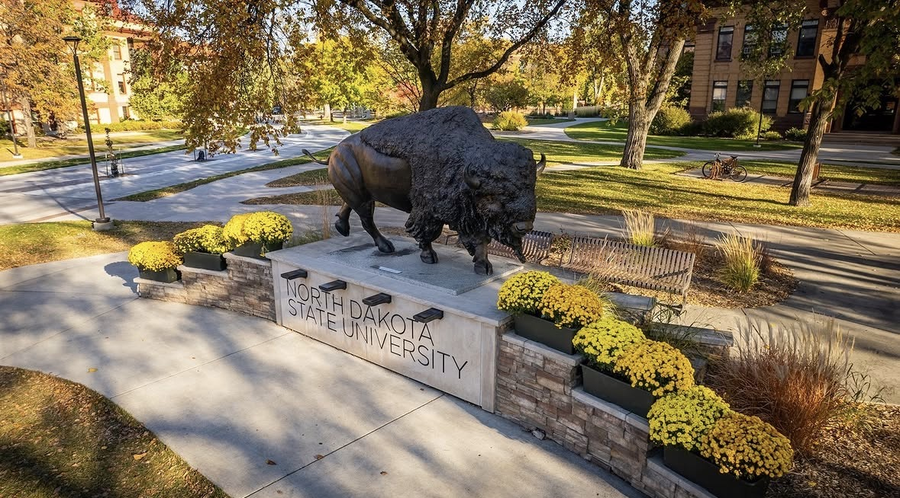
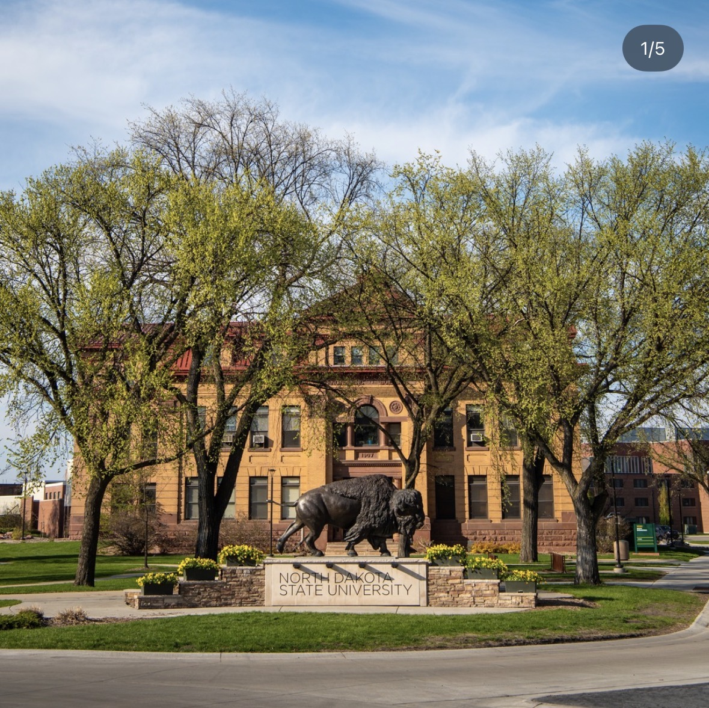
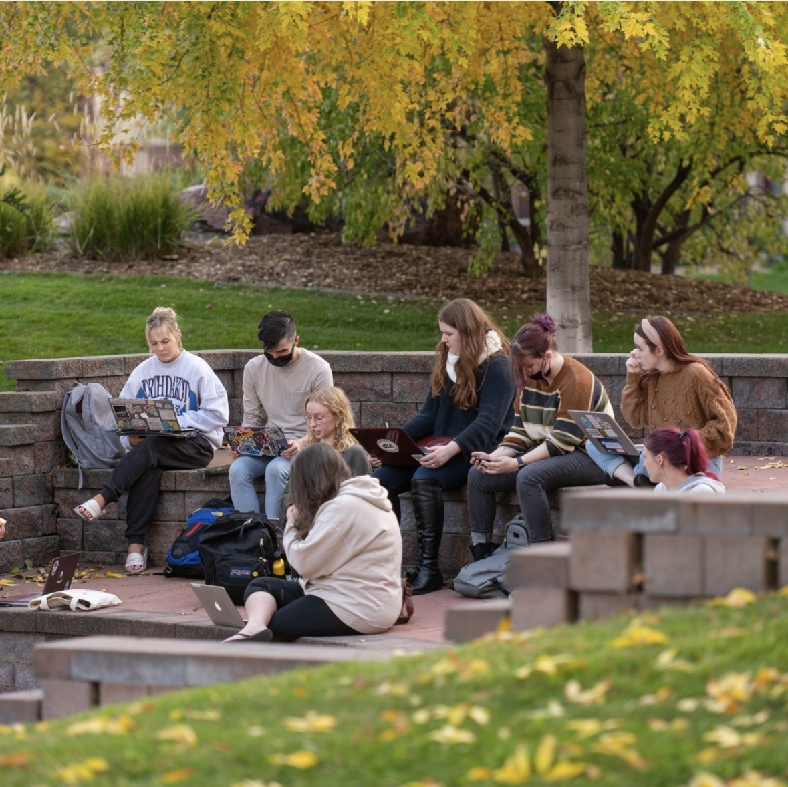
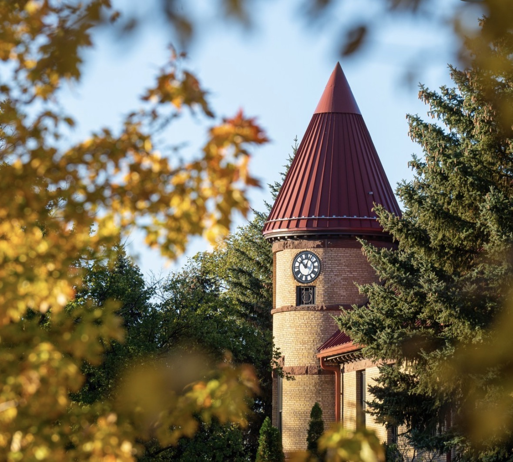
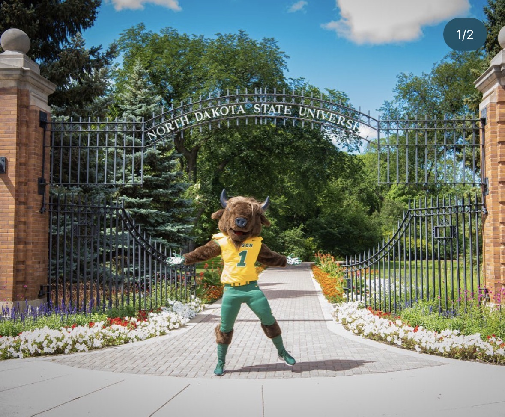
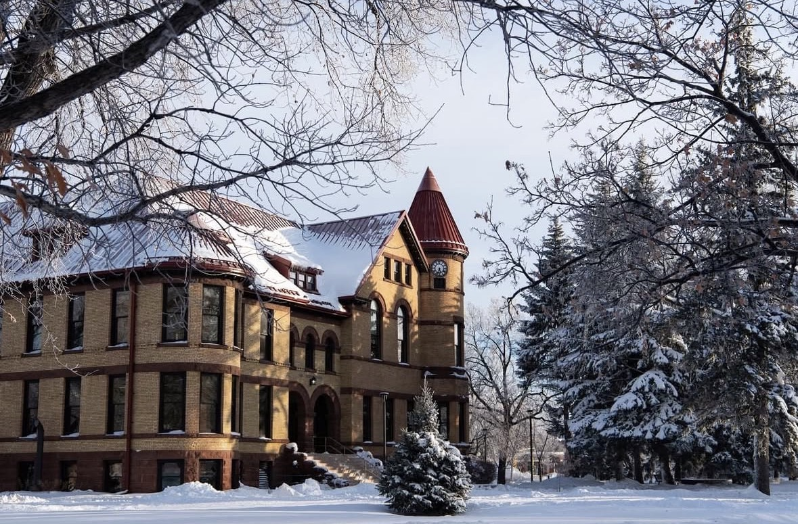
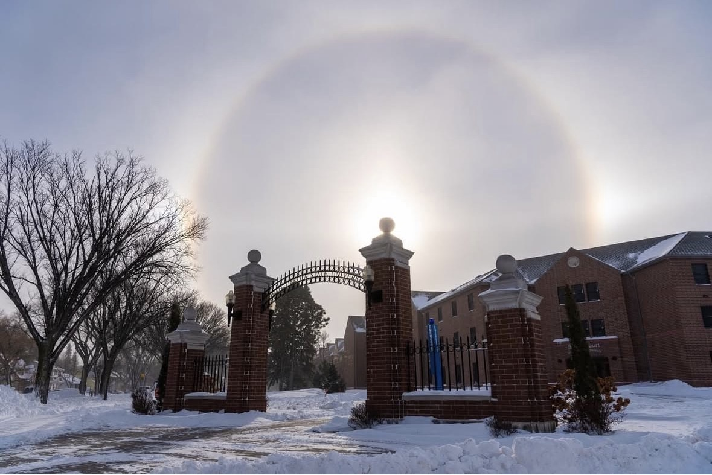